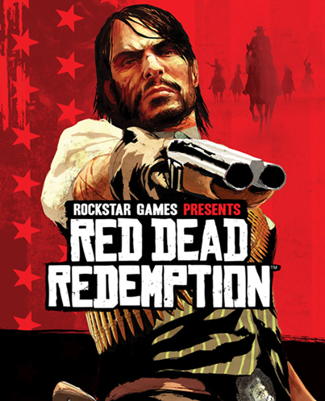

Após o grande sucesso de seu antecessor Red Dead Redemption da RockStar Games, uma empresa de desenvolvedores de games como GTA V, GTA San Andreas, Bully. A história se passa em 1899 em uma representação ficcional do Oeste , Centro-Oeste e Sul dos Estados Unidos e segue o fora da lei Arthur Morgan , um membro da gangue Van der Linde. Arthur deve lidar com o declínio do Velho Oeste enquanto tenta sobreviver contra forças governamentais, gangues rivais e outros adversários. A história também segue o colega de gangue John Marston , o protagonista de Red Dead Redemption (2010).
